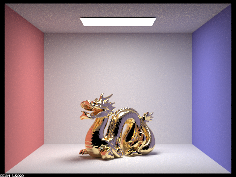

Building on the previous project 3-1, we add to our pathtracer the capabilites to render mirror and glass materials and isotropic rough conductor materials. To render mirror and glass materials, we modify BSDFs to take reflection and refraction into account. To render the conductor materials, we implement a microfacet model, modifying the BRDF function accordingly.
Part 1: Mirror and Glass Materials
To render mirrors and glass, we implement reflection and refraction into our pathtracer. This is done in the BSDF class using the object coordinate space, where the origin is the intersection and z-axis the normal vector. Reflection is simple about the z-axis. Reflection is a spacial case where Lambertian falloff does not happen and only direction is changed. Refraction uses the index of refraction and Snell's law to find the correct angle of the transformation. Here, total internal reflection occurs when 1 - η^2 (1 - cos^2θ) < 0, where η is the ratio of the old index of refraction to the new ior. Refraction also does not cause Lambertian falloff, but concentrates or disperses a ray based on η.
In glass, both reflection and refraction occur (in addition to total internal reflection). We use Schlick's approximation to the Fresnel equations to model this effect. Using Schlick's reflection coefficient, we decide whether to reflect an incoming ray or refract it.
The following is a sequence of CBspheres scenes with increasing max ray depths.
|
|
|
In depth 0, we see the ceiling light, where the light goes directly into the camera. For depth 1, the room comes into view and the ceiling light shows up on the reflective portions of the spheres. A ray reflects off the back mirror sphere and to the ceiling light, while the glass sphere has some probability of reflecting.
|
|
|
In depth 2, the back reflective sphere shows the room from the one bounce image. The front glass sphere shows the reflective portion. In depth 3, the front glass sphere shows refraction, where a ray comes from the camera (1) into the glass (2) out of the glass to a wall and (3) to the ceiling light.
|
|
|
|
|
In depth 4, we see a patch of light on the blue wall where light reflected off the mirror sphere has been focused through the glass sphere. This requires one more bounce of light from this patch into the sphere than the depth 3 image. In addition, the back mirror sphere sees the light in the front glass sphere. This uses the depth 3 glass sphere with one reflective bounce. In depth 5 and depth 100, no additional features are seen in the scene compared to depth 4.
|

|
|
Part 2: Microfacet Material
In this part, we implemented the Microfacet model in order to render isotropic rough conductors that
only reflect.
We first implemented the BRDF evaluation function MicrofacetBSDF::f() according to the
equation in the spec. Then, we implemented the normal distribution function
MicrofacetBSDF::D() in order to define the distribution of the microfacet's normal vectors.
We then implemented the Fresnel term in MicrofacetBSDF::F(), which is also used in the
BRDF evaluation function. Lastly, we implemented importance sampling in
MicrofacetBSDF::sample_f() in order to reduce noise in less number of samples, using
a distribution to match the Beckmann NDF.
The following four images of a gold dragon each use a different value for α, which represents the roughness of the macro surface. The lower α is, the more smooth and glossy the gold dragon appears. All four images were rendered using 256 samples per pixel, 1 sample per light, and a maximum ray depth of 7.
|
|
|
|
|
|
The following two images show the same copper bunny, using two different sampling methods. The first uses the default cosine hemisphere sampling, and the second uses the importance sampling that we implemented in this part. We see that, keeping all other parameters the same between the two pictures, the bunny rendered with cosine hemisphere sampling shows more noise and black spots. It seems that the number of samples used was insufficient to render the material clearly using cosine hemisphere sampling. Meanwhile, the bunny rendered with this part's importance sampling shows much less noise, and we can see the copper material rendering more completely. Both images use 64 samples per pixel, 1 sample per light, and a maximum ray depth of 7.
|
|

|
Lastly, we also looked into modeling another conductor material besides the provided copper and gold. The following image shows a rendered bunny that is supposed to be made of cobalt. We used a roughness of α = 0.1. We used the following indices of refraction in order to model cobalt:
| Wavelength | 614 nm (red) | 549 nm (green) | 466 nm (blue) |
|---|---|---|---|
| η | 2.1849 | 2.0500 | 1.7925 |
| k | 4.0971 | 3.8200 | 3.3775 |
The cobalt bunny was rendered using 256 samples per pixel, 4 samples per light, and a maximum ray depth of 7.
A Note on Collaboration
We collaborated mainly by dividing up the work per part. Ryu implemented part 1 while Marco implemented part 2. This division helped in making the amount of work more manageable. However, in order to make this project a valuable learning experience for the both of us, we still went over the code that the other person wrote, taking time to understand how each part works. Overall, our collaboration went well, and we were able to communicate when we would be able to work on the project and when we made progress. Also, the use of Git branches was a helpful tool in maintaining versions of our code.